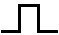

Označení rovnobokého drážkování podle ISO 14:1982 (ČSN EN ISO 14), (středění vždy na malý průměr):

ISO 14 - z × d × D, například:Označení rovnobokého drážkování podle dřívější ČSN, středění na malý průměr:
d - z × d × D × b ČSN 01 49XX, například: